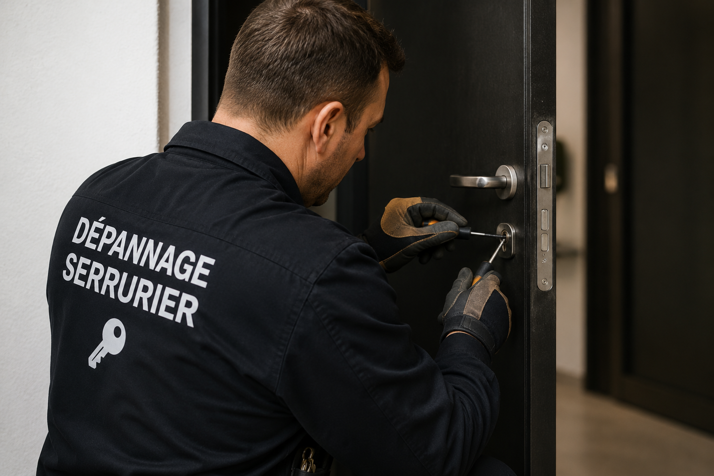
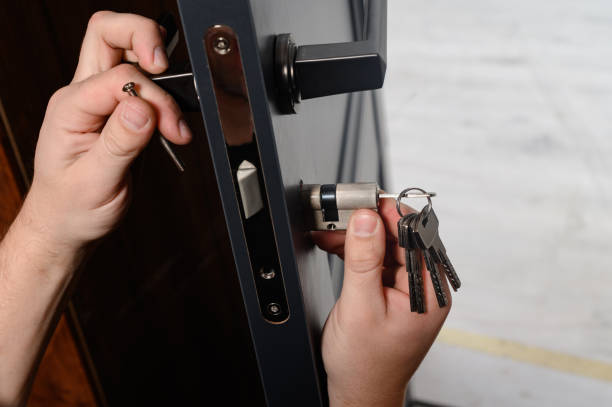

Tri au téléphone
On vérifie si la porte est claquée, verrouillée, blindée ou si la clé est cassée avant de parler méthode.
Intervention de nuit : prix annoncé avant travaux
Serrurier de nuit Paris 9e (75009) pour porte claquée, porte fermée à clé, serrure bloquée, clé cassée et cylindre. Prix annoncé avant intervention.
Dans le 75009, la demande de nuit vient souvent d’un retour tardif, d’une clé perdue, d’une porte claquée ou d’une serrure qui ne répond plus. L’objectif reste le même : ouvrir proprement quand c’est possible, sécuriser si nécessaire et éviter les changements de serrure inutiles.

On vérifie si la porte est claquée, verrouillée, blindée ou si la clé est cassée avant de parler méthode.
Si la porte est simplement claquée, l’ouverture sans casse reste prioritaire, même en pleine nuit.
Le tarif est annoncé avant ouverture, cylindre, extraction ou remplacement de serrure.
Après intervention, la fermeture, le pêne, la gâche et le cylindre sont testés.
La nuit, l’erreur fréquente est de confondre vitesse et précipitation. Dans Paris 9e, un dépannage sérieux commence par une question simple : la clé a-t-elle tourné ou la porte est-elle seulement claquée ? Cette différence change la méthode, le temps d’intervention et le prix.
Le contexte nocturne impose aussi de limiter le bruit et les dégâts. Dans un immeuble occupé, sur palier étroit ou accès sécurisé, le serrurier doit travailler proprement, annoncer le prix et éviter les remplacements inutiles.
Une intervention de nuit dans le 75009 peut concerner une porte claquée après une sortie vers les Grands Boulevards. Le bon réflexe consiste à ne pas forcer la clé, ne pas démonter la poignée et appeler en donnant le plus d’informations possible.
Une porte claquée n’est pas verrouillée. Elle est retenue par le pêne demi-tour, souvent après un courant d’air, une sortie rapide ou un retour où les clés restent à l’intérieur. Dans ce cas, le serrurier cherche à ouvrir sans percer le cylindre.
Le tarif à partir de 75€ concerne cette configuration précise : porte simplement claquée, non verrouillée, accès normal et serrure non endommagée. Si la porte a été fermée à clé, si elle est blindée ou si le bâti est déformé, un devis est annoncé avant intervention.
À Paris 9e, cette situation peut arriver vers Pigalle comme vers Notre-Dame-de-Lorette. Le secteur change l’accès, mais pas la logique métier : comprendre avant d’agir.
Quand un tour de clé a été donné, le dépannage n’est plus une simple porte claquée. Le cylindre, le pêne dormant et parfois plusieurs points de fermeture sont engagés.
La nuit, une clé perdue peut créer une vraie urgence, surtout si l’adresse est identifiable ou si personne ne peut apporter un double. Le serrurier évalue alors l’ouverture puis la sécurisation, notamment par changement de cylindre si le risque est réel.
Dans le 75009, cette décision doit rester expliquée. Changer un cylindre peut être utile après perte de clés, mais remplacer toute la serrure n’est pas automatique.
Une serrure 3 points, 5 points ou une porte blindée demande plus de précision. Forcer au mauvais endroit peut abîmer le mécanisme sans ouvrir la porte.
Le serrurier annonce la méthode, le tarif et les limites avant travaux. Cette transparence compte encore plus la nuit, quand le client est souvent pressé et fatigué.

Une serrure qui force depuis plusieurs jours finit souvent par bloquer au pire moment. La clé entre mal, tourne à moitié, se coince ou casse dans le cylindre. En intervention de nuit, il faut éviter de pousser le morceau de clé ou d’insister jusqu’à casser le mécanisme.
Le serrurier contrôle le cylindre, la poignée, la gâche, le pêne et l’alignement de la porte. Une extraction peut parfois suffire. Si le cylindre est trop usé ou dangereux, le remplacement est proposé avec accord préalable.
Dans Paris 9e, le contexte local est secondaire : sorties de spectacle, bureaux et appartements en étage. Le vrai sujet reste la panne et la bonne méthode de dépannage.
Le prix dépend du cas réel. La nuit ne doit pas servir à improviser un montant : le devis est expliqué avant travaux.
À partir de 75€ si l’accès est normal et que la serrure n’est pas endommagée.
Devis avant intervention selon cylindre, niveau de fermeture et type de porte.
Diagnostic avant extraction, réparation ou changement du cylindre.
Après perte de clés, vol ou tentative d’effraction, selon situation et matériel.
Une intervention nocturne doit rester proportionnée. Voici des cas où le diagnostic évite les mauvais choix.
une porte claquée après une sortie vers les Grands Boulevards. Le premier réflexe est de savoir si la porte est claquée ou verrouillée.
Si les clés sont perdues avec adresse possible, l’ouverture peut être suivie d’un changement de cylindre, mais seulement après accord.
Un cylindre grippé ou une porte mal alignée peut bloquer la clé. Forcer augmente le risque de casse.
La méthode dépend de la marque, du protecteur, du cylindre et du nombre de points engagés.
Le maillage aide à retrouver la bonne page selon le besoin réel : ouverture, urgence, cylindre ou serrure bloquée.
Appelez si vous êtes bloqué dehors, si la porte est claquée, si la clé ne tourne plus, si la serrure est verrouillée ou si une sécurisation doit être faite sans attendre dans le 75009.
Oui. Le prix est annoncé avant l’ouverture, l’extraction de clé, le changement de cylindre ou la sécurisation. La nuit ne doit pas empêcher un devis clair.
Le tarif à partir de 75€ concerne une porte simplement claquée, non verrouillée et accessible normalement. Une porte blindée, verrouillée ou abîmée demande un devis avant intervention.
Non, pas automatiquement. Le remplacement est proposé seulement si le cylindre, le pêne, la gâche ou la serrure présente un défaut réel après contrôle.
Évitez de pousser le morceau de clé. Le serrurier vérifie si l’extraction est possible avant de proposer un changement de cylindre.
Oui, mais une porte blindée ou multipoints demande une analyse plus précise. La méthode et le prix sont validés avant travaux.
Appelez en indiquant l’arrondissement, le quartier, le type de porte, si la clé a tourné et si la serrure est blindée. Le prix est annoncé avant intervention.